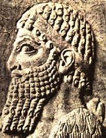

Rey Ashur-dan I (1178-1133 a.C.)
 Ashur-dan I fue un rey asirio de la época del Imperio Medio, hijo y sucesor de Ninurta-apil-Ekur. Su reinado fue uno de los más largos en la historia de Asiria, y aunque hay pocos registros detallados, se sabe que jugó un papel clave en la estabilidad y expansión del reino.
- Recuperación dinástica – Su ascenso al trono marcó la restauración de la estabilidad tras la muerte de Tukulti-Ninurta I, quien había dejado el reino en una situación de crisis.
- Conflictos con Babilonia – Durante su reinado, Asiria perdió el control sobre Babilonia, pero Ashur-dan I lanzó una expedición militar, conquistando ciudades como Zaban e Irria, además de recuperar el territorio fronterizo de Sallu, que era objeto de disputas constantes.
- Defensa contra invasores – Se enfrentó a los mushki, un pueblo que amenazaba el norte de Asiria, logrando derrotarlos y asegurar la frontera. También combatió a los akhlamu y los sutu, imponiéndoles tributo.
A pesar de los conflictos, Ashur-dan I logró mantener la independencia de Asiria frente a Babilonia y consolidar su influencia en la región. Su reinado sentó las bases para la expansión futura del imperio y la estabilidad política que sus sucesores aprovecharían.